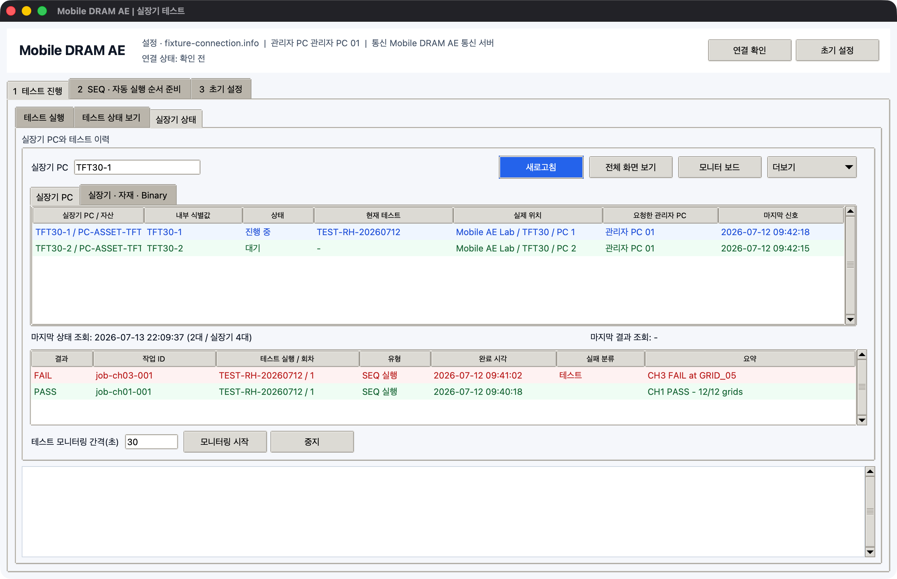

여러 실장기 PC 운용
관리자 PC에서는 여러 TFT/UTF의 실장기 PC에 같은 테스트 또는 서로 다른 테스트를 보낼 수 있습니다. 요청과 결과는 PC별·실장기별로 분리되며 한 PC의 지연이 다른 PC의 실행표를 덮어쓰지 않습니다.
실행표 구성 예
| 실행 | 실장기 | 테스트 | SEQ | 장착 자재 ID |
|---|---|---|---|---|
| 선택 | TFT30-1 / CH1 | Row Hammer 4-Corner | RH_4C_SM8850_V04 |
AA-1 |
| 선택 | TFT30-1 / CH2 | Row Hammer 4-Corner | RH_4C_SM8850_V04 |
AA-2 |
| 선택 | TFT31-2 / CH7 | Aging | AGING_MTK25D_V02 |
SS-1 |
| 해제 | TFT31-2 / CH8 | 준비 중 | 없음 | SS-2 |
각 행은 독립 실행 단위입니다. 같은 실장기 PC의 네 대를 함께 선택할 수도 있고, 한 대만 선택할 수도 있습니다.
대상 불러오기와 편집
실장기 불러오기를 누릅니다.- TFT/UTF, 실장기 PC 또는 개별 실장기를 선택합니다.
- 실행표에서 제외할 행의 선택을 해제합니다.
- 서로 다른 테스트가 필요하면 행별로 SEQ와 자동 실행 순서를 바꿉니다.
- 장착 자재 ID와 실장기별 입력값을 확인합니다.
행을 복제한 경우 대상 실장기 번호가 중복되지 않았는지 확인합니다. 한 실장기에 동시에 두 요청을 보내지 않습니다.
요청이 전달되는 방식
- 관리자 PC는 짧게 통신 서버에 연결해 요청 파일을 올리고 연결을 종료합니다.
- 실장기 PC는 일정 간격으로 자기 폴더의 새 요청만 확인합니다.
- 요청을 가져온 뒤에는 로컬 PC에서 실행하고, 진행 상태와 결과만 다시 올립니다.
- 한 연결을 계속 열어 두지 않으므로 다른 프로그램의 서버 사용을 장시간 막지 않습니다.
상태 새로고침 간격을 너무 짧게 설정하지 않습니다. 일반 상태는 수 초 단위로 확인하고, 전체 화면은 필요할 때만 요청합니다.
실행 전 PC별 확인
| 확인 항목 | 정상 기준 |
|---|---|
| 최근 연락 시각 | 설정한 허용 시간 안에 있음 |
| 프로그램 상태 | 통신 중 또는 테스트 실행 중 |
| SK Commander | 필요한 창이 열려 있고 실장기 번호가 맞음 |
| COM | 등록한 실장기와 실제 USB 식별값이 일치 |
| 저장 공간 | 로그와 화면을 저장할 여유가 있음 |
| 고장 상태 | 실행 대상이 정상 또는 승인된 사용 주의 상태 |
오프라인으로 표시되는 PC에는 실행 요청을 반복해서 보내지 않습니다. 해당 PC에서 프로그램과 통신 설정을 먼저 확인합니다.
관리자 PC와 실장기 PC에서 동시에 정보 수정
실장기 정보는 수정 시각을 비교해 더 최근 값을 유지합니다.
- Binary 이름·버전·원본 폴더는
Binary 수정 시각으로 비교합니다. - SoC, DRAM, Lot, 장착 자재 ID, 고장 상태는
기본 정보 수정 시각으로 비교합니다. - 수정한 PC와 시각을 함께 표시합니다.
Binary 정보와 기본 정보는 별도의 수정 시각으로 관리됩니다. 같은 항목을 관리자 PC와 실장기 PC에서 수정한 경우에는 최신 시각의 값을 유지합니다. 현장 작업자는 수정 직후 이 PC 정보를 통신 서버에 반영을 누릅니다.
긴급 중단
대상 실장기를 잘못 선택했거나 잘못된 입력이 반복될 때 긴급 중단을 사용합니다.
- 중단할 실행 행을 선택합니다.
- 실행 ID와 실장기 PC를 다시 확인합니다.
긴급 중단을 누릅니다.- 상태가
중지로 바뀌는지 새로고침합니다. - SK Commander 또는 직접 COM 화면에서 남아 있는 동작이 없는지 확인합니다.
중단 요청은 이미 장치 내부에서 시작된 모든 물리 동작을 되돌리지 않습니다. Binary 쓰기 또는 전원 작업 중에는 해당 도구의 안전 종료 절차도 확인합니다.
여러 PC를 볼 때의 권장 화면
테스트 상태: 실행 ID, 진행 상태, 결과, 최근 로그 중심실장기 상태: SoC, Binary, 장착 자재, 부팅 단계와 고장 상태 중심모니터 보드: 테스트별로 정한 텍스트·색상 판정만 모아 보기Excel 내보내기: 교대 또는 보고 시점의 상태 보관
